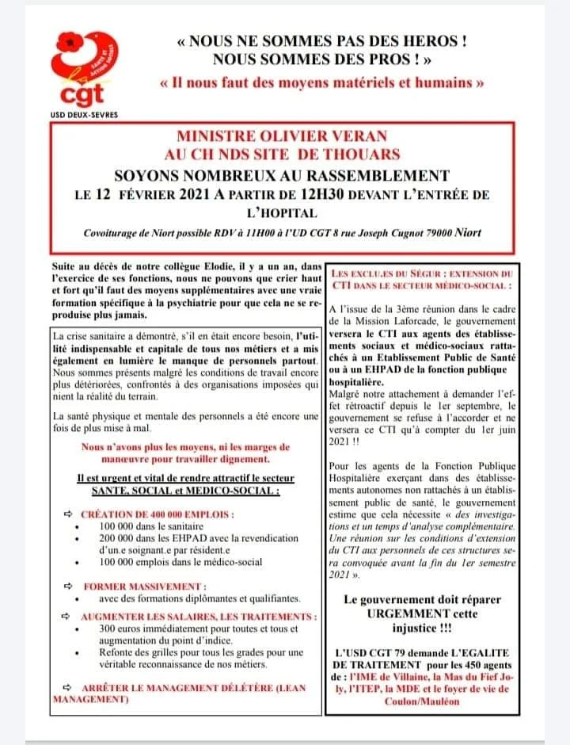

Publication d’archives
A l'occasion du passage du Ministre de la Santé en Deux-Sèvres, une mobilisation est prévue
Date indiquée par Facebook · 10 février 2021
Texte conservé avec la publication
Contexte du dossier
L’annonce du passage d’Olivier Véran en Deux-Sèvres fait remonter une difficulté quotidienne : des personnes de plus de 75 ans, invitées à se vacciner, ne trouvent pas de créneau. Le billet du 10 février met cette pénurie en regard des précédents manques de masques et de tests. Il conteste une communication gouvernementale jugée trop satisfaite.
Son calcul prolongeant le rythme vaccinal du moment jusqu’en 2024 est une projection polémique de février 2021 ; il ne raconte pas la suite réelle de la campagne. La publication longue et son rappel annoncent tous deux une mobilisation le 12 février à 12 h 30 sur le site thouarsais du Centre hospitalier Nord Deux-Sèvres. Elles établissent le rendez-vous prévu et le motif de l’interpellation, sans fournir le compte rendu de sa tenue.

Sources
Archive rouge · export Facebook · AR-0002-FB-02069
À lire aussi · Novembre 2022 : un budget à la hauteur des vies ?